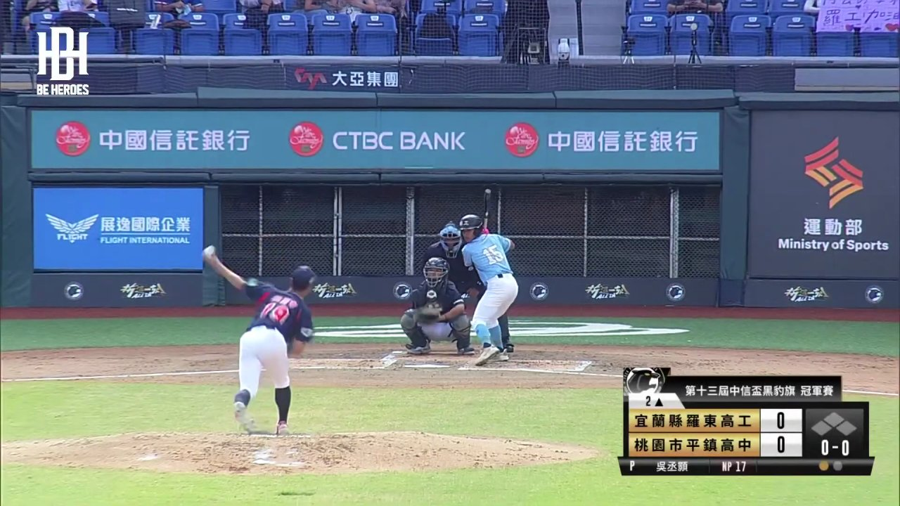
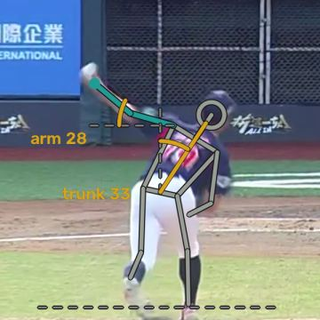
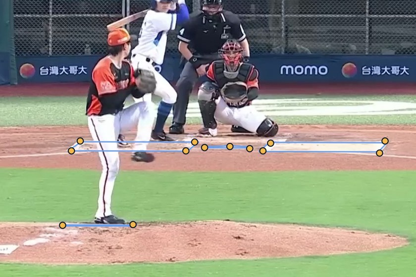

概念
放進一段轉播影片，
逐球分析
投球數與球速來自轉播或開源的逐球資料、投手在出手時的身體機制來自中外野攝影機

轉播畫面

記分板：球數、用球數、球速

放球點的姿勢
PSA · 03
PSA · 投手狀態分析
由每位投手的放球點姿勢來了解場間狀態變化。無須追蹤裝置，也不需付費資料。
2026 野革盃 · Rebas 黑客松
hakexva.github.io/psa-demo
問題
Statcast、Hawk-Eye 和 TrackMan 量測每一球的球速、轉速以及出手點。
以人工計算投球數，無法投資追蹤系統或購買付費資料。
黑豹旗等賽事有固定中外野鏡頭的免費直播。之後在練習時，把手機架在投手丘後方拍 Live AB，就能得到同樣的視角。
PSA · 02
概念
投球數與球速來自轉播或開源的逐球資料、投手在出手時的身體機制來自中外野攝影機

轉播畫面
記分板：球數、用球數、球速

放球點的姿勢
PSA · 03
運作機制
01
保留中外野鏡頭，省略重播與特寫鏡頭。
02
球數、用球數、球速，藉由 macOS 文字辨識軟體讀取。
03
Apple Vision人體姿勢偵測，學習模型找出放球點的一瞬間。
04
當公開逐球資料時，根據資料進行比對；若無，則依據記分板的球數變化來判斷每一球的結果。
05
PSI：投手狀態指數
PSA · 04
分數
d = 該次出賽（或該球）速球球速變化 ÷ 速球球速變化閥值
速球球速變化閥值：在95%的信心水準下，能夠察覺到的最小變化。d=1代表變化已達觀測值以上
投球結果 = 100 · e^(−d²/4)
沒有變化是 100，剛好到閥值是 78，兩倍閥值是 37。即 Harrington 雙側合意函數（1965），n = 2。
PSI (投手狀態指數) = ½ 投球結果 + ½ 機制
投球結果：球速、控球。機制：姿勢、時序、出手一致性。
80+ 穩定持續
60–79 值得留意
60 以下 標記投手狀況改變
PSA · 05
一場比賽的出賽成績
74
球速 −1.0 km/h → 88
控球 好球率少 19 個百分點 → 82
投球出手點擴散度 ×1.46 → 64
74
時序：轉髖與開肩的時機改變 → 32
球速 −2.3 km/h → 80
控球 → 96 · 姿勢 → 87
前一天投 23 球，當天投 46 球：雖符合休息規定，但兩個分數都顯示值得觀察。教練這個時候就可利用轉播來生成PSI分析報告。
PSA · 06
根據不同情況，分析投手是否穩定
| 單場分數 | PSI（比賽與比賽之間） | |
|---|---|---|
| 比較 | 後半段和前半段 | 這場出賽與前三場 |
| 閥值 | 只計抽樣誤差 | 抽樣加上正常的比賽間變化 |
| 虛無檢定 | 同一場比賽的隨機兩半 | 將一季賽事的出場時序打亂 |
| 聯盟檢查 | 隨機兩半中，0% 被標記；21% 的先發在後半段球速下降。 | 不計算場間差異時，56% 的出賽達到「95%」閥值 |
PSA · 07 · Rebas 開放資料 2023-2025，所有中職出賽
每座棒球場都有其獨特性
每座球場的中外野鏡頭角度各有不同，因此一座球場的 5° 傾斜在另一座球場並不等同於 5°。
在一格畫面上標出 13 個關鍵點（打擊區、本壘板、投手板），置於其官方距離，能夠計算出攝影機的方向與焦距。
同一轉播的不同片段，皆會相差在 0.1–0.5° 內。
PSA · 08
真實畫面

黃點： 在一格畫面上手動點出的 13 個點。
藍線： 依官方尺寸的打擊區、本壘板和投手板，透過解出的攝影機畫回畫面上。
和手動點位平均只差 4.5 像素。已標記的 40 部影片全部都能解出。
中職轉播，2025-06-24
PSA · 09
Demo展示：hakexva.github.io/psa-demo
盃賽 · 高中
用球數會依照休息規定進行檢查，每場比賽都有 PSI 和場內分數。
賽季 · 中職
每場出賽都與前三場相比，PSI 與比賽分數並列比較。
範例
2025 黑豹旗冠軍戰，羅東高工 vs 平鎮高中：每一球都經過五個步驟驗證。
免費
不需硬體設備，不需付費資料
33
已評分的出賽
3,164
已追蹤的投球
大約五分鐘
每部精華影片
PSA · 10 · hakexva.github.io/psa-demo
數據目前能支持的論點
114 / 114
自動判定的出手點全部落在人工標記 ±1 影格內，而且是在從未看過的黑豹旗攝影機上
1.4°
同一球在兩個中職轉播剪輯中，投手側傾差異的中位數
0.1–0.5°
同一中職訊號來源不同剪輯之鏡頭方向的一致性
0.2%
43 場黑豹旗出賽中，隨機兩半被標記的比例：雜訊不會被當成變化
PSA · 11
目前數據還無法呈現出來的
閥值設定過於嚴苛
2025 黑豹旗 10 場全場比賽：投手的速球在兩場之間變化 1.8 km/h（標準差），而不是只計抽樣時預估的 0.9；42% 的變化超過「95%」閥值（中職 2023–2025：56%）。
還沒有結果可以驗證
高中比賽沒有公開的逐球資料，標記有沒有意義只能由教練判斷。在中職，投球結果分數偏低並不能預測下一場先發（ρ = −0.02）。
一個盃賽，8 位投手
蔡辰瀧（平鎮）四場下來速球少了 5.6 km/h（146 → 140 km/h），四強前還休息了 9 天：這是給教練的線索，不是結論。
PSA · 12
下一步
把在黑豹旗和中職量到的場間差異納入每個項目的閥值，再重跑兩個測試。
Live AB 時把手機架在投手丘後方，讓教練和投手在比賽之間也能檢查狀態。
2025 玉山盃（同樣是羅東、平鎮、美和的投手）和 2026 黑豹旗（10/25–11/29）的全場比賽。
先從黑豹旗的球隊開始，請教練檢視 PSI 標記的出賽，告訴我們哪些標記重要。
PSA · 13